What is PASS?
The Performer availability Screening Service (PASS) is a program administered by the Free
Speech Coalition (FSC) in order to provide the adult industry with a safe, reliable, and
standardized STI testing protocol and a centralized database for checking the clearance to
work status of tested talent and crew members.
The PASS program includes:
Speech Coalition (FSC) in order to provide the adult industry with a safe, reliable, and
standardized STI testing protocol and a centralized database for checking the clearance to
work status of tested talent and crew members.
The PASS program includes:
- A network of PASS Certified providers with a series of nationwide testing sites that provide low cost, high quality testing in a timely manner
- Variety of medical providers for treatment of performrs in need of medical follow-up
- Consistent standards and guidelines for testing and treatment of adult performers
- A secure database that ensures performer privacy and protects producer liability
- Protocol for performer support in the event of a positive HIV test result, including funding for testing of 1st and 2nd generation partners
- Testing procedures for calling an industry-wide production hold when necessary to prevent the spread of infection.
Is PASS a part of FSC?
Yes. PASS is a program administered by the Free Speech Coalition (FSC), a 501(c)6 non-profit.
Who can join PASS?
Any performer or crew member in the adult industry can join PASS either by signing up
through the FSCPASS.org website, or by testing with a PASS Certified provider and choosing
to have their results sent to PASS. Producers and licensed talent agents can join PASS by signing up through FSCPASS.org
website. Producers and agents must be verified before their accounts are approved. This
process can take 2-4 business days.
through the FSCPASS.org website, or by testing with a PASS Certified provider and choosing
to have their results sent to PASS. Producers and licensed talent agents can join PASS by signing up through FSCPASS.org
website. Producers and agents must be verified before their accounts are approved. This
process can take 2-4 business days.
Do I have to pay for PASS?
There is no charge to use PASS for members of the adult industry.
How is PASS funded?
PASS is a program administered by the Free Speech Coalition (FSC), a 501(c)6 non-profit.
PASS is funded in the same way as the rest of the organization, through a combination of
FSC membership dues and general donations. FSC received no revenue from PASS because
we do not charge members of the adult industry to use PASS.
PASS is funded in the same way as the rest of the organization, through a combination of
FSC membership dues and general donations. FSC received no revenue from PASS because
we do not charge members of the adult industry to use PASS.
What are the criteria for PASS certification?
In order to become a PASS Certified provider, the folowing criteria must be met:
- Sign the PASS Certification Contract, which includes verification of:
- Clinicial Laboratory License (if not own lab, then contract and license of contracted lab)
- Certificate of Accreditation (CLIA)
- Business License Certificate
- W9 to prove Employer ID
- Medical Director Certification and License Information
- Provide the complete PASS standardized test panel, inclusive of draw fees and
shipping costs, at a cost of $200 or lower. - Provide other tests, as determined necessary by PASS, at a competitive price.
- Adhere to all applicable local, state, and federal laws and regulations regarding the
conduct of medical tests, the reporting of test results, and patient privacy. - Adhere to the estimated 24 to 48 hour time frame for test results (excluding holiday
hours, and positive tests requiring additional time to be retested). - Immediately make received test results available to tested performer.
- Immediately, upon receiving test results, record pertinent information in the PASS
system for the tested performer, exercising sound professional judgement concerning
the performer’s reasonable availability for production work involving sexual contact
with others. - Contact PASS’s Designated Contact Person immediately in the event of a positive HIV, HBV, or HBC test result.
- Adhere to PASS Policies and Procedures as directed by FSC.
- Work, consistently with PASS protocols, to provide first and second generation partner
testing (and further testing as resonably required) in the case of an adult performer
positive HIV, HBV, or HCV test, and coordinate all such work with PASS. - Display the PASS Certified badge on Provider’s website with a link to the PASS website.
- Make PASS materials pertaining to the education, health, and cost subsidies available
to performers. - Contact FSC’s Executive Director immediately if any government entity requestspatient records for any performer enrolled in the PASS system.
- Inform FSC of any new laboratories, clinics, or other business relationship that would
be invovled in PASS participation, and provide required documentation as listed under
"Provider Requirements." - Participate in the PASS Advisory Council.
What is PASS 2.0?
PASS 2.0 is the next version of the FSC PASS program. It includes upgrades to
FSCPASS.org and the PASS database.
The inprovements include, but are not limited to, the following:
FSCPASS.org and the PASS database.
The inprovements include, but are not limited to, the following:
- Improved user interface
- Mobile website
- Fully electronic data from labs
- Improved search functionality
- Printable cast/crew lists with testing status
- And much more...
Is PASS secure?
Yes. The FSC PASS database has been built with several layers of security features, but no
system is foolproof. In the event of a breach, the data contained does not include personal
records. The system was designed this way to protect user’s privacy.
records. The system was designed this way to protect user’s privacy.
What is in the PASS panel of STI tests?
The PASS panel includes nine tests for seven STIs.
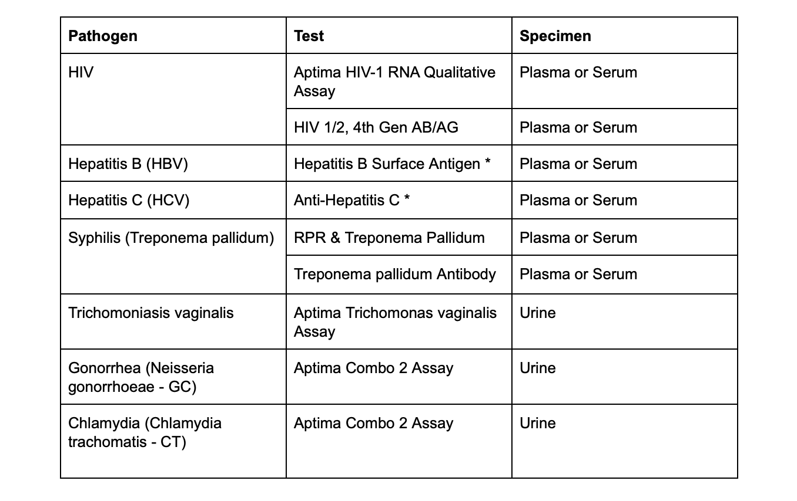
Where can I find a PASS Certified testing facility?
Click on the Testing Facilities tab at the top of every page on FSCPASS.org. There are
several options listed on that page. Click on the name of the testing facility to visit their website
for further instruction.
several options listed on that page. Click on the name of the testing facility to visit their website
for further instruction.
What do I do if the testing facility I use is no longer PASS Certified?
If you have been testing regularly with a provider who is no longer PASS Certified, the safest
option to choose is to find a provider who is PASS Certified. We are in discussions with a new
national network to help fill the regional void.
If there are no PASS Certified providers near you, and you can not hold off on work, you could
potentially test at a lab outside the PASS system that uses the same tests as PASS. We do not
recommend this option, but we understand the need for it during this transitional time.
Choosing to test outside of PASS compromises your safety and that of the industry in the following ways:
If you choose to test outside of PASS, to be as safe as possible, do the following:
option to choose is to find a provider who is PASS Certified. We are in discussions with a new
national network to help fill the regional void.
If there are no PASS Certified providers near you, and you can not hold off on work, you could
potentially test at a lab outside the PASS system that uses the same tests as PASS. We do not
recommend this option, but we understand the need for it during this transitional time.
Choosing to test outside of PASS compromises your safety and that of the industry in the following ways:
- As a central body, PASS is the only authority capable of managing production holds,
which are a necessary prevention tool. We have no assurance that outside labs would
alert FSC in the case of a potential positive test, either for COVID or HIV. Nor do we
have assurance that they would participate in contact tracing in the event of a positive. - PASS Certified labs all require the same standardized tests.
- The Performer Subsidy Fund (PSF) is only available to those who test within PASS.
- Outside labs are not held accountable by the industry to the same level as PASS
Certified labs. - PASS does not generate revenue and is not funded by a single entity outside of FSC.
Unlike outside networks, the policies and procedures that govern PASS are not driven by
a profit motive. PASS exists only to protect the health safety of its members.
If you choose to test outside of PASS, to be as safe as possible, do the following:
- Ensure that you are receiving the full PASS panel of nine STI tests from a CLIA-certified lab. [See the full FAQ on FSCPASS.org for a list of all tests.]
- Do not share your results via screenshot or print-out, or accept someone else’s results in
that manner. Whenever possible log in to the provider portal to view test results. - If you receive a positive test, please consider informing PASS so that we can aid in
contact tracing for the industry and take steps to call a production hold if necessary.
Why was the provider I used decertified by PASS?
In recent months, two PASS Certified providers voluntarily withdrew from the FSC PASS
program after failing to meet several of the criteria for PASS certification.
In one instance, the provider was not consistently meeting the 48-hour turnaround time for
test results and they were not providing the full PASS panel of STI tests. In most cases, they
were running the second test for HIV and the second test for Syphilis only if the first test came
back positive, rather than running both tests together, which is a PASS requirement.
In the other instance, the provider had withdrawn from the PASS Advisory Council, had refused to sign an updated contract stipulating agreement to all PASS requirements, and had
stopped sending results to PASS.
program after failing to meet several of the criteria for PASS certification.
In one instance, the provider was not consistently meeting the 48-hour turnaround time for
test results and they were not providing the full PASS panel of STI tests. In most cases, they
were running the second test for HIV and the second test for Syphilis only if the first test came
back positive, rather than running both tests together, which is a PASS requirement.
In the other instance, the provider had withdrawn from the PASS Advisory Council, had refused to sign an updated contract stipulating agreement to all PASS requirements, and had
stopped sending results to PASS.
Are you adding more PASS Certified lab networks?
FSC is currently vetting additional providers for the FSC PASS network. We are prioritizing
those with national lab networks in order to increase the number of PASS Certified testing
facilities available to serve members of the adult industry located outside the main hubs of
production.
those with national lab networks in order to increase the number of PASS Certified testing
facilities available to serve members of the adult industry located outside the main hubs of
production.
How much does the PASS panel of STI tests cost?
All PASS Certified providers must limit the cost of the test panel to $200. The average cost
from our current providers is $165-$185. This does not include any additional draw fees or
shipping costs that are charged at some locations.
from our current providers is $165-$185. This does not include any additional draw fees or
shipping costs that are charged at some locations.
How fast will I get my test results?
All PASS Certified providers must provide test results in 48 hours or less. Most results are
returned within 24 hours.
returned within 24 hours.
What is the Performer Subsidy Fund (PSF)?
The Performer Subsidy Fund (PSF) is a pool of money contributed on a monthly basis by
producers and other adult industry companies that is used to help offset the cost of testing for
performers. FSC’s goal is to grow the PSF to the point where we are able to get the cost of
STI testing close to $0 for performers.
producers and other adult industry companies that is used to help offset the cost of testing for
performers. FSC’s goal is to grow the PSF to the point where we are able to get the cost of
STI testing close to $0 for performers.
How does the PSF work?
Every two months, the amount of money in the PSF is divided by the number of unreimbursed
tests in PASS. FSC sends checks to performers to partially reimburse them for the cost of
those tests. For example, if the current reimbursement rate is $20/test and you test three
times in the past two months, you will receive a check for $60. FSC’s goal is to grow the PSF to the point where we are able to get the cost of STI testing close to $0 for performers.
We rely on the producers and agents who pay for or reimburse testing costs to send lists of
their performers so that we can exclude those performers from receiving PSF
reimbursements.
tests in PASS. FSC sends checks to performers to partially reimburse them for the cost of
those tests. For example, if the current reimbursement rate is $20/test and you test three
times in the past two months, you will receive a check for $60. FSC’s goal is to grow the PSF to the point where we are able to get the cost of STI testing close to $0 for performers.
We rely on the producers and agents who pay for or reimburse testing costs to send lists of
their performers so that we can exclude those performers from receiving PSF
reimbursements.
Am I eligible to receive checks from the PSF?
If you had your test results send to PASS and if your test was not paid for or reimbursed by
your producer or your agent, you are eligible to receive reimbursement from the PSF.
If you are not currently receiving checks from the PSF and you believe you should be, please
contact us at pass@freespeechcoalition.com or (818) 348-9373.
your producer or your agent, you are eligible to receive reimbursement from the PSF.
If you are not currently receiving checks from the PSF and you believe you should be, please
contact us at pass@freespeechcoalition.com or (818) 348-9373.
Is a COVID-19 test part of the PASS test panel?
The PASS panel of STI tests itself remains unchanged. Because COVID incubation and
transmission rates aren’t well established, it would be misleading to choose an arbitrary for
which you are ‘clear’ to work.
However, our labs are all adding a COVID test, which will appear separately in the database. If
you do test positive for COVID, you will not be cleared to work.
FSC’s Preliminary Health and Safety Guidelines for Adult Film Production do recommend a
COVID-19 PCR test 1-2 days prior to each shoot for every person who will be present on the
set, as a way to lower risk.
If the COVID-19 test is conducted by a PASS Certified provider, PASS has been modified to
display those results. We’ve included a new field, separate from the PASS panel clearance,
titled “Last Neg. COVID-19 Result.” This field shows the date of the last non-reactive COVID-19
test results, and the number of days since that test was taken.
However, given the expense and increased frequency of the COVID tests, we do not require
that performers or crew pay for a test at a PASS lab. Local governments are providing free rapid
testing, as are some health insurance plans. How you test for COVID, and how often, will be up
to you or your production company.
transmission rates aren’t well established, it would be misleading to choose an arbitrary for
which you are ‘clear’ to work.
However, our labs are all adding a COVID test, which will appear separately in the database. If
you do test positive for COVID, you will not be cleared to work.
FSC’s Preliminary Health and Safety Guidelines for Adult Film Production do recommend a
COVID-19 PCR test 1-2 days prior to each shoot for every person who will be present on the
set, as a way to lower risk.
If the COVID-19 test is conducted by a PASS Certified provider, PASS has been modified to
display those results. We’ve included a new field, separate from the PASS panel clearance,
titled “Last Neg. COVID-19 Result.” This field shows the date of the last non-reactive COVID-19
test results, and the number of days since that test was taken.
However, given the expense and increased frequency of the COVID tests, we do not require
that performers or crew pay for a test at a PASS lab. Local governments are providing free rapid
testing, as are some health insurance plans. How you test for COVID, and how often, will be up
to you or your production company.
Do I have to test for COVID-19 every 24 hours?
No. FSC’s Preliminary Health and Safety Guidelines for Adult Film Production recommend a
COVID-19 PCR test 1-2 days prior to each shoot in order to reduce risk, but that timeline is not
mandatory.Some companies and producers are requiring 24-hour tests, but others may not. We
have few guarantees with COVID, so as a performer or producer, you will have to determine
your tolerance for risk.
The guidelines have been developed by an industrial hygienist to reduce the risk of COVID-19
infection and transmission on adult film production sets of all types. The document provides
general guidance and suggested procedures but does not contain mandatory requirements
regarding how the plan should be implemented nor how production must be done.
COVID-19 PCR test 1-2 days prior to each shoot in order to reduce risk, but that timeline is not
mandatory.Some companies and producers are requiring 24-hour tests, but others may not. We
have few guarantees with COVID, so as a performer or producer, you will have to determine
your tolerance for risk.
The guidelines have been developed by an industrial hygienist to reduce the risk of COVID-19
infection and transmission on adult film production sets of all types. The document provides
general guidance and suggested procedures but does not contain mandatory requirements
regarding how the plan should be implemented nor how production must be done.
How much time do I need to allow after a shoot before retesting for COVID-19 for my next shoot?
FSC’s Preliminary Health and Safety Guidelines for Adult Film Production do not make a
recommendation for how much time to wait after a shoot before retesting for COVID-19.br/> However, if you are testing every 1-2 days, you will likely need at least one day off between
shoots in order to have time to get a new test. The more time you can allow between shoots, the
better.
recommendation for how much time to wait after a shoot before retesting for COVID-19.br/> However, if you are testing every 1-2 days, you will likely need at least one day off between
shoots in order to have time to get a new test. The more time you can allow between shoots, the
better.
Do I have to get a COVID-19 test from a PASS Certified lab?
No. You can get a COVID-19 test anywhere the PCR test is available. However, the results of
your COVID-19 test will only appear in PASS if you receive your test from a PASS Certified lab.
If you choose to get a COVID-19 test at a lab unaffiliated with PASS:
more convenient provider. Crew members can choose to get their COVID-19 test anywhere.
your COVID-19 test will only appear in PASS if you receive your test from a PASS Certified lab.
If you choose to get a COVID-19 test at a lab unaffiliated with PASS:
- Ensure that they are using a PCR test.
- Use discretion in verifying test results. Many laboratories use secure portals to display
results, try to use these over paper test results or a screenshot.
more convenient provider. Crew members can choose to get their COVID-19 test anywhere.
If I want my test results sent to PASS, can I get tested for only COVID-19, and not the PASS Panel of STI tests?
Yes. A red X or a N/A will appear in the PASS Panel Clear section, but a test date will appear in
the Last Neg. COVID-19 Result column. However, people without PASS Panel clearance are
not clear to have sex on set.
the Last Neg. COVID-19 Result column. However, people without PASS Panel clearance are
not clear to have sex on set.
How do I see my COVID-19 testing in PASS?
Log on to PASS like you would normally, and on your home screen there will be a new column
titled “Last Neg. COVID-19 Result” with the date of your last non-reactive COVID-19 test result.
This is an example of what your personal updated test result panel will look like:
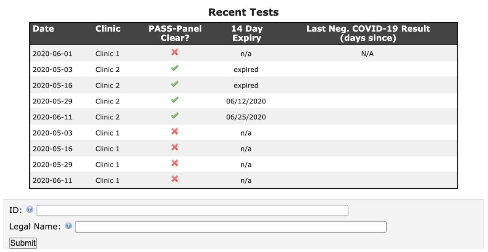
Definitions:
PASS Panel Clear
This indicates whether or not a person has taken the standard PASS Panel of STI tests and has
been cleared to have sex on set. A green check indicates that a person has an active clear test.
A red X means they do not have an active clear test.
14 Day Expiry
This is the date that the clearance will expire for the PASS Panel of STI tests. (This is set to 14
days after the original test date.)
Last Neg. COVID-19 Result (days since)
This indicates the date of the last non-reactive COVID-19 test results, and the number of days
since that test was taken. FSC recommendation is that people should only be allowed on set
within 1-2 days of their last negative COVID-19 test result.
titled “Last Neg. COVID-19 Result” with the date of your last non-reactive COVID-19 test result.
This is an example of what your personal updated test result panel will look like:
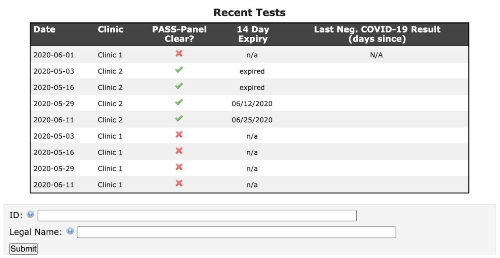
Definitions:
PASS Panel Clear
This indicates whether or not a person has taken the standard PASS Panel of STI tests and has
been cleared to have sex on set. A green check indicates that a person has an active clear test.
A red X means they do not have an active clear test.
14 Day Expiry
This is the date that the clearance will expire for the PASS Panel of STI tests. (This is set to 14
days after the original test date.)
Last Neg. COVID-19 Result (days since)
This indicates the date of the last non-reactive COVID-19 test results, and the number of days
since that test was taken. FSC recommendation is that people should only be allowed on set
within 1-2 days of their last negative COVID-19 test result.
How do I look up other COVID-19 test results?
Log on to PASS like you would normally. Just like with PASS Panel clearance, enter the PASS
ID or legal name of who you are trying to look up into the search bar. In the results, a new
column “Last Neg. COVID-19 Result” shows the last time a person received a negative test
result for COVID-19, and the number of days that have passed since that date.
There are several different displays you might find.
Figure 1 shows a performer who is PASS Panel clear and has a recent negative COVID-19 test result.
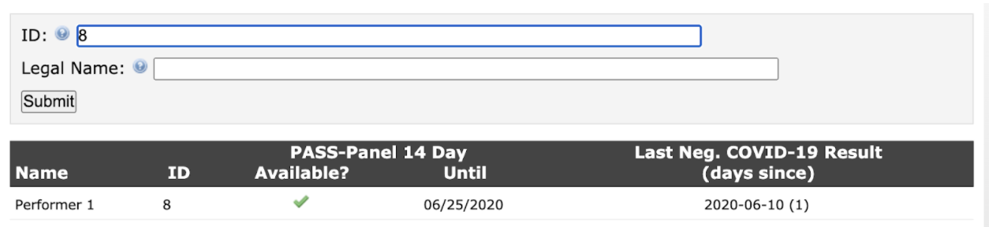
Figure 2 shows a performer who is PASS Panel clear, but does NOT have a negative COVID-19
test result. We recommend that this person is not allowed on set unless you can verify a negative COVID-19 PCR test another way.
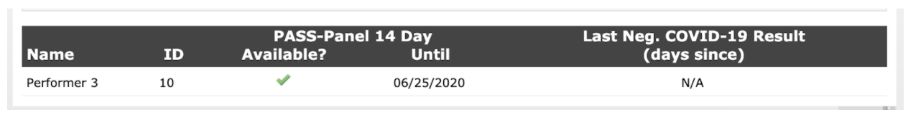
Figure 3 shows a crew member who is NOT PASS Panel clear, but does have a negative
COVID-19 test result. We recommend that this person be allowed on set, but not allowed to
engage in sexual activity.
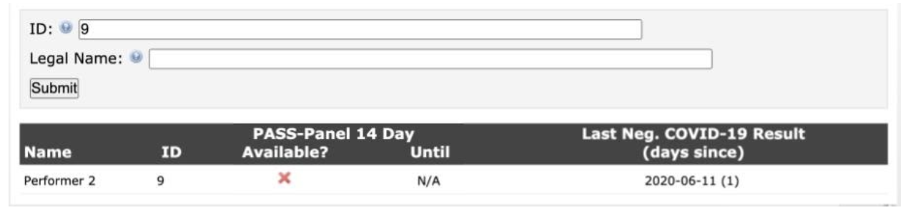
Figure 4 shows someone who is neither PASS Panel clear, nor do they have a recent negative
COVID-19 test.
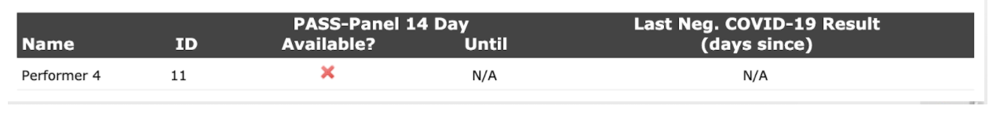
ID or legal name of who you are trying to look up into the search bar. In the results, a new
column “Last Neg. COVID-19 Result” shows the last time a person received a negative test
result for COVID-19, and the number of days that have passed since that date.
There are several different displays you might find.
Figure 1 shows a performer who is PASS Panel clear and has a recent negative COVID-19 test result.
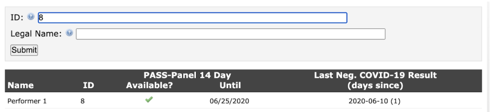
Figure 2 shows a performer who is PASS Panel clear, but does NOT have a negative COVID-19
test result. We recommend that this person is not allowed on set unless you can verify a negative COVID-19 PCR test another way.
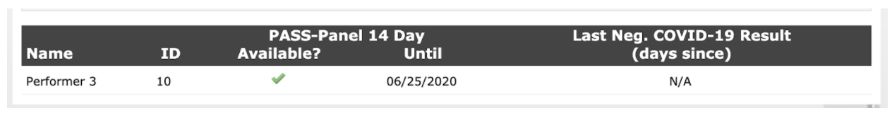
Figure 3 shows a crew member who is NOT PASS Panel clear, but does have a negative
COVID-19 test result. We recommend that this person be allowed on set, but not allowed to
engage in sexual activity.
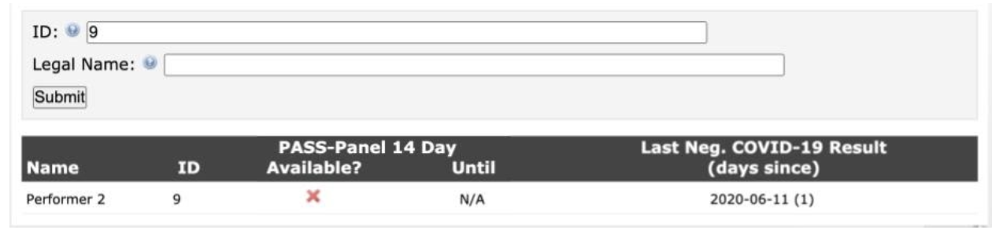
Figure 4 shows someone who is neither PASS Panel clear, nor do they have a recent negative
COVID-19 test.
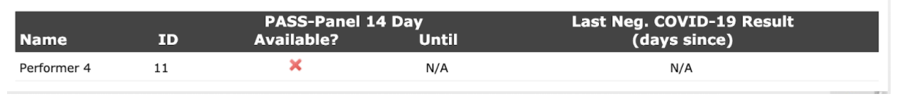
How do I change my password?
All passwords are generated automatically due to the secure nature of the database. If you have
forgotten your password, another one can be generated through the 'forgot your password' link
on the log-in page.
forgotten your password, another one can be generated through the 'forgot your password' link
on the log-in page.
How do I share my testing information?
The safest way to share your clearance to work status with PASS is to log in every time.
Another person with a PASS account can log in to PASS and search for you using your legal
name or your PASS ID number.
Another person with a PASS account can log in to PASS and search for you using your legal
name or your PASS ID number.
What information does PASS display about me to other people?
The only information that PASS displays about you to authoritzed PASS users is:
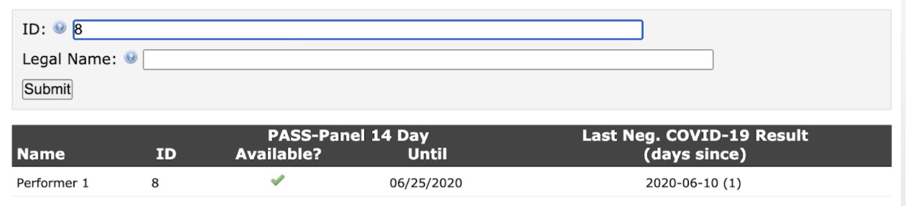
- Legal name
- PASS ID
- PASS Panel clearance
- Expiration date of PASS Panel clearance
- Test date of last negative COVID-19 test
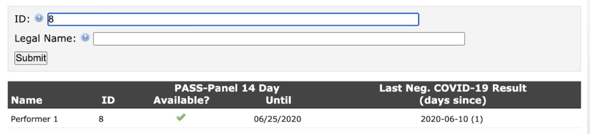
Why isn’t my testing information in PASS
If you have not yet received your test results from your PASS Certified provider, PASS has also
not received your test results.
If you have already received your test results but they are still not showing PASS, the most
common reason is that you did not give permission for these test results to be shared with
PASS. Please check with your provider to ensure that you elected to share your results.
not received your test results.
If you have already received your test results but they are still not showing PASS, the most
common reason is that you did not give permission for these test results to be shared with
PASS. Please check with your provider to ensure that you elected to share your results.
How do I contact you if I am still having issues with PASS?
Please contact FSC PASS (818) 348-9373 or pass@freespeechcoalition.com
Copyright © 2020 FSC. All Rights Reserved.